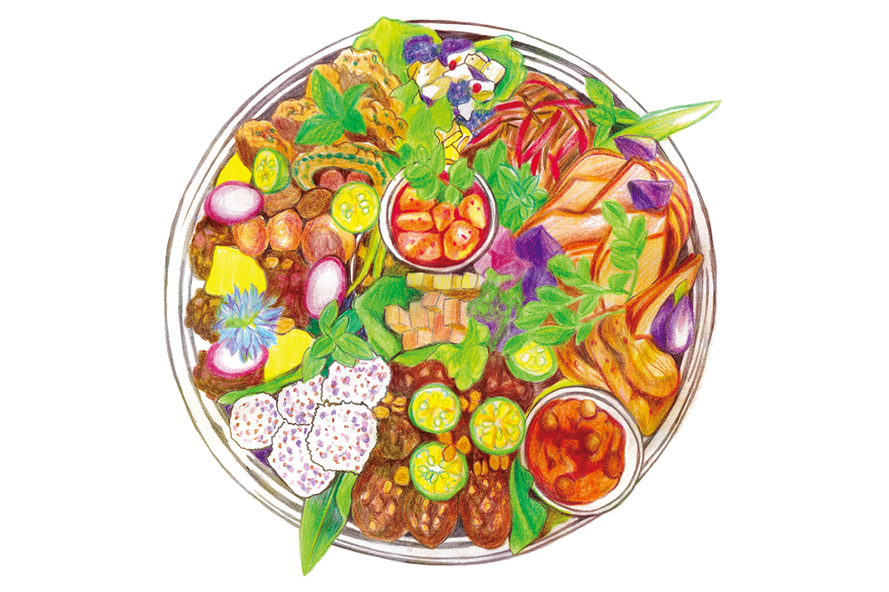
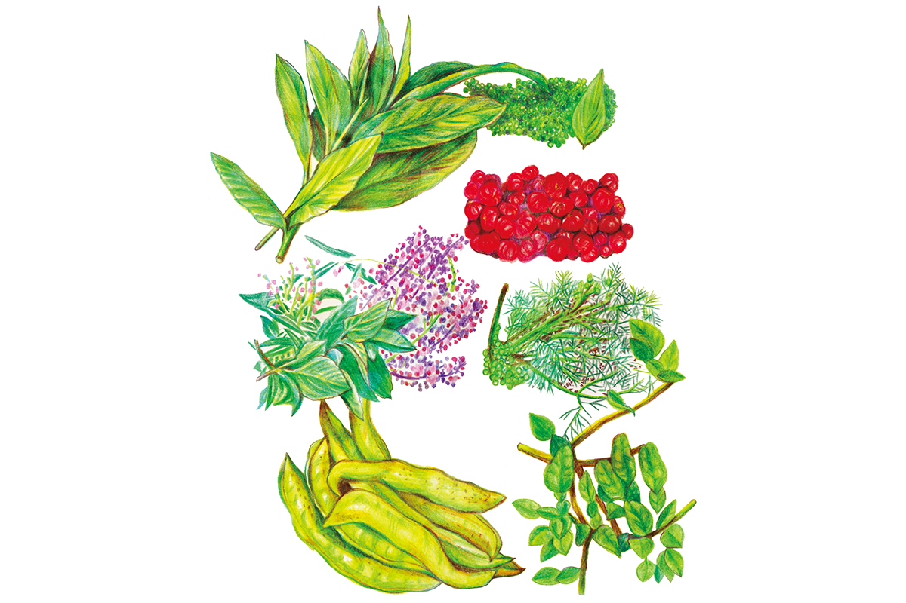
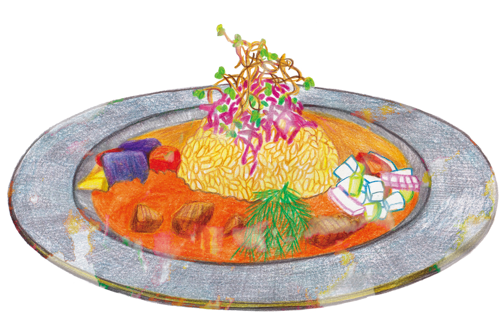
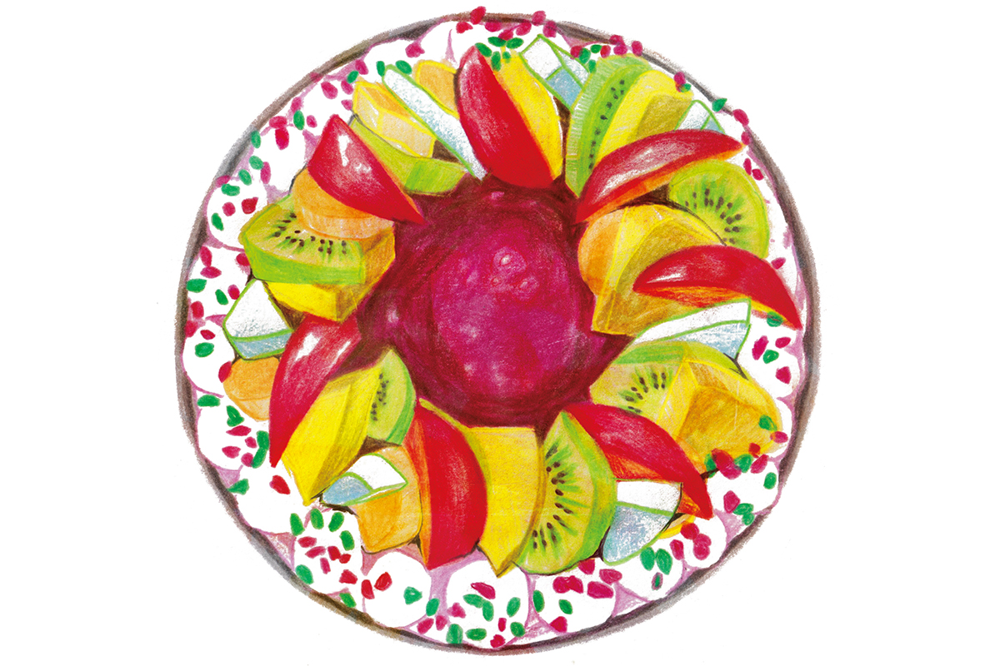

Префектура Окинава · Ямбару, Урума, Наха · еда
Фермерская и веганская Окинава: от Ямбару до восточных островов и Нахи

Чтобы узнать Окинаву по-настоящему, лучше спросить тех, кто здесь живёт. Две жительницы острова, редактор и хозяйка веганского ресторана, рассказали, куда повели бы любопытного друга: к фермерам, поварам и в маленькие заведения, где всё растёт буквально за дверью.
Ямбару
Ферма, у которой свой ресторан
Первая рассказчица ведёт небольшое бюро в Нахе: вдвоём с партнёром они придумывают и делают буклеты и упаковку, редактируют и пишут тексты. Когда её попросили назвать места, открывшиеся за последний год, она сначала подумала о городе. Но потом поняла, что почти все знакомые бюро живут ближе к земле и морю.
Ямбару называют лесистый север острова Окинава. Здесь фермер выращивает около 70 видов овощей, специй, трав и даже кофе, и здесь же он открыл on the farm, ресторанчик на 12 мест. На каждый вечер он приглашает повара, иногда из других префектур, и тот готовит меню, которое больше не повторится. Фермер задумал on the farm как площадку, где повара, добравшиеся до продуктов Ямбару, знакомятся с местными производителями. Такого человека, признаётся рассказчица, встретишь нечасто.
Он и раньше сводил фермеров с поварами и небольшими цехами переработки. С одной его фразы начался целый проект фермеров Ямбару:
«В Ямбару, самом горном районе острова, есть вкусные островные овощи, свинина, морепродукты, соль и сахар. Добавить к ним специи, и можно принимать гостей, не выходя за пределы Ямбару»
фермер, основатель on the farm

Окинава находится на северной границе, где пряности ещё растут, и это делает её передовой японских специй. Если помнить об этом в поездке, остров раскрывается сильнее. В соседнем селе Накидзин открылось кафе Haamine'S со шри-ланкийским карри. Отдельная его прелесть в хозяине: шриланкиец бойко говорит на диалекте префектуры Ибараки.
on the farm
- Адрес
- префектура Окинава, Наго, Гэнка, 53
- Телефон
- +81 980-43-7753
- Часы работы
- работает несколько дней в месяц, даты в официальном Instagram
- Выходные
- нерегулярные
Haamine'S
- Адрес
- префектура Окинава, уезд Кунигами, село Накидзин, Вакугава, 1031
- Телефон
- +81 80-6022-0083
- Часы работы
- 11:00–17:00 (последний заказ 16:30)
- Выходные
- понедельник, вторник
coconova: парк под крышей в Наго
В Куси, деревне на окраине города Наго, где почти не осталось жителей, тогдашние студенты взяли в аренду землю и устроили «деревню» на самообеспечении. Так они хотели показать обществу, с какими трудностями сталкивается глубинка. Бывший староста этой деревни стал директором coconova, общественного пространства в бывшей поликлинике Наго. Им управляет компания, которую возглавляет архитектор, и пространство обустраивали постепенно, своими руками.
С первого взгляда coconova кажется просто модным местом. Но если присмотреться к деталям и к людям вокруг, становится ясно: здесь находит место то разнообразие, которое общество всё чаще вытесняет. Это своего рода парк, куда может заглянуть кто угодно, от ребёнка до кошки. При нём работает кафе с кофе и домашними закусками (обед кладут в круглую деревянную коробку), проходят мероприятия и мастер-классы.
coconova
- Адрес
- префектура Окинава, Наго, Миясато, 1004
- Телефон
- +81 90-6859-4861
- Часы работы
- 10:00–20:00
- Выходные
- понедельник
Добавим про Ямбару. Ещё севернее Наго лежат сёла Огими, Хигаси и Кунигами, и именно этот район внесён в список Всемирного природного наследия. По заказу туристической ассоциации Огими бюро рассказчицы нарисовало в 2022 году иллюстрированную карту трёх сёл. Её идея простая: разнообразие природного наследия видно не только в глубине леса, но и рядом с жильём. В карте есть короткие заметки со словами заведующих «кёдо байтэн» (сельских лавок, которые жители сообща содержат и ведут, так придумали на Окинаве), гидов и музейных сотрудников. Карту раздавали в туристических ассоциациях трёх сёл.
Урума
Острова, с которых не хочется уезжать
Из Ямбару на юг большинство едет по западному побережью. Но в Уруме, городе в средней части восточного берега, всё больше новых жителей: их притягивают сама земля и острова. Город помогает тем, кто открывает здесь своё дело. Из пяти обитаемых островов Урумы на четыре можно попасть на машине. Только на острове Мияги появились две закусочные, «Умихата сёкудо Тианда» и «Агориба сёкудо», а на соседнем Хамахига открылась кофейня «Намикадзэ коффи» («Нами то кадзэ то»). Один островитянин с улыбкой рассказывал рассказчице, что и сам не заметил, как перестал выезжать с острова.
Если останавливаться на островах Урумы, стоит знать о Plantasy. Здесь готовят еду в основном из растений: кейтеринг на заказ, закуски, ланч-боксы и заготовки. В дело идут продукты острова Мияги, то, что издавна ели местные бабушки, и дикие травы, которых на рынке не найти.
«Умихата сёкудо Тианда»
- Адрес
- префектура Окинава, Урума, Ёнасиро-Тобару, 196
- Телефон
- +81 90-9562-3910
- Часы работы
- 11:00–15:00 (последний заказ)
- Выходные
- с понедельника по четверг
«Агориба сёкудо»
- Адрес
- префектура Окинава, Урума, Ёнасиро-Уэбару, 21
- Телефон
- +81 90-3437-9675
- Часы работы
- 11:00–14:00, в субботу, воскресенье и праздники до 16:00
- Выходные
- среда, четверг, первое воскресенье месяца
«Намикадзэ коффи» («Нами то кадзэ то»)
- Адрес
- префектура Окинава, Урума, Ёнасиро-Кацурэн-Хига, 1629-1
- Часы работы
- 11:00–16:00 (последний заказ)
- Выходные
- нерегулярные
- Сайт
- namikaze.okinawa
Plantasy
- Часы работы
- 8:00–18:00 (кейтеринг и интернет-магазин)
- Выходные
- нерегулярные
- Цены / Вход
- кейтеринг только для партнёрских вилл и гостиниц у острова Мияги, доставка в другие места по договорённости
Наха
Театр из ажурных блоков
Напоследок город. Вокруг строительства городского театра Нахи когда-то было немало споров, но теперь у Naha Cultural Arts Theater NAHArt прекрасная репутация: в большом и малом залах, выставочных помещениях и студиях идут спектакли и выставки. Рассказчица сама была поражена, сколько сильных актёров, драматургов и режиссёров в современном окинавском театре. Она зовёт сюда не только любителей сцены, но и тех, кому Окинава из телесериалов так и не пришлась по душе.
Ей вообще хочется предложить друзьям путешествие по «хана-буроку». Так называют бетонные блоки с прорезями самых разных форм. В остальной Японии их зовут ажурными или декоративными, похожие есть и в других странах, и везде они отражают характер места. После сухопутных боёв на Окинаве было разрушено около 100 000 домов, примерно 84% всего жилья, и бетонные блоки на остров принесла американская армия. С них началась почти тотальная бетонизация окинавской архитектуры, и в этой непростой истории один окинавский архитектор придумал хана-буроку. Здание театра щедро украшено такими блоками, и уже одним этим оно ей симпатично.
«Вокруг трещин, разломов, ран и отверстий человек мечтает и думает»
французский писатель Жильбер Ласко
Эти слова рассказчица вспоминает каждый раз, когда стоит перед хана-буроку, которых на улицах Окинавы бесчисленное множество, и думает об истории острова.
Naha Cultural Arts Theater NAHArt
- Адрес
- префектура Окинава, Наха, Кумодзи, 3-26-27
- Телефон
- +81 98-861-7810
- Часы работы
- 9:00–22:00
- Выходные
- первый и третий понедельник месяца (если это праздник, то следующий рабочий день); в День памяти погибших открыто
- Сайт
- nahart.jp
Веган
Ukishima Garden и её выпускники
Вторая рассказчица работала сценаристом на телевидении в Токио. Чтобы поправить здоровье, она научилась готовить из злаков, вела кулинарную школу, а потом переехала на Окинаву. В 2011 году она открыла в Нахе веганский ресторан Ukishima Garden. Узнав, что море загрязняется в том числе из-за сельского хозяйства, она решила готовить только из того, что выращено органически, без пестицидов.
«Я помню, каким чистым было здешнее море раньше. И поняла: пока не изменится сельское хозяйство, лучше не станет ни морю, ни земле»
хозяйка Ukishima Garden
Найти окинавские овощи оказалось очень непросто: она искала фермеров и закупала у них продукты, чтобы заодно их поддержать. Для веганского «мяса», «рыбы» и «яиц» нужны злаки, поэтому она восстановила местное сорго из нескольких чудом сохранившихся зёрен, а в 2017 году создала кооператив производителей окинавских злаков и возглавила его. В отличие от овощей, зерно можно хранить, и ей хочется, чтобы таких фермеров стало больше. В тёплом климате Окинавы одни культуры дают два урожая в год, другие четыре.

Примерно тогда же, когда открылся ресторан, на Окинаву после Великого восточнояпонского землетрясения стали массово переезжать люди. Почти одновременно появилось много новых фермеров, которые растят органические овощи и злаки. Местная кухня от этого заметно выросла, и заведения, где можно поесть веганам и вегетарианцам, стали обычным делом. За 11 лет работы Ukishima Garden из её кухни вышли «выпускники», которые открывают свои заведения.
Ukishima Garden
- Адрес
- префектура Окинава, Наха, Мацуо, 2-12-3
- Телефон
- +81 98-943-2100
- Часы работы
- 11:30–18:00 (последний заказ 17:00)
- Выходные
- с понедельника по четверг
«Сидзэн ину» в Ёмитане
В деревне Ёмитан работает кафе «Сидзэн ину». На обеденной тарелке много блюд, в основном из окинавских овощей без пестицидов, и вкусно всё. Хозяйка пришла из кондитерского дела, поэтому веганские торты на десерт здесь особенно хороши. В 2022 году кафе открывалось только по пятницам, субботам и воскресеньям, так что, если совпадёт по времени, обязательно зайдите.
«Сидзэн ину»
- Адрес
- префектура Окинава, уезд Накагами, деревня Ёмитан, Фуругэн, 183, M-1
- Телефон
- +81 90-2715-5774
- Часы работы
- 11:30–15:00
- Выходные
- с понедельника по четверг
«Спайс карри Пальмира» в Кодзе
В Кодзе, центре города Окинава, рекомендуем «Спайс карри Пальмира». Веганское карри здесь варят на овощном бульоне с бобами и грибами, и оно превосходно. Для тех, кто ест мясо, есть карри с курицей и другие невегетарианские варианты.
«Спайс карри Пальмира»
- Адрес
- префектура Окинава, город Окинава, Тюо, 1-17-21
- Телефон
- +81 50-1446-3898
- Часы работы
- 12:00–16:30 (последний заказ 15:30), 18:00–21:00 (последний заказ 20:00)
- Выходные
- четверг, воскресенье
«Симабукуро»: кухня острова Иэ в Нахе
Это заведение не из числа выпускников, но хозяйка Ukishima Garden часто сюда ходит. «Иэдзима сёку-но иэ Симабукуро» стоит в переулке в одном квартале от улицы Кокусай-дори, очень удобно. Хозяин родом с острова Иэ и готовит из его продуктов. Чампуру из овощей, которые выращивает на Иэ его мать, получается по-домашнему вкусным. Обязательно попробуйте темпуру из водорослей аса и мозуку: масло хорошее, и тяжести после неё совсем нет. А ещё хозяйка Ukishima Garden очень любит дзимами-тофу, арахисовый «тофу» из местного арахиса с Иэ. Здесь готовы подстроиться и под вегетарианцев.

Если вернуться к сельскому хозяйству, продовольственная самообеспеченность префектуры в последние годы снова выросла и, по данным на 2022 год, составила 34%. Фермерские рынки, где продают в основном органические овощи, полны покупателей.
«Я хочу, чтобы о прелести островных овощей и злаков узнало больше людей и чтобы красивое море осталось красивым. Будем и дальше выращивать, есть и тем самым поддерживать»
хозяйка Ukishima Garden
«Иэдзима сёку-но иэ Симабукуро»
- Адрес
- префектура Окинава, Наха, Макиси, 3-10-5
- Телефон
- +81 98-917-5222
- Часы работы
- 17:00–23:00
- Выходные
- вторник, среда
Фото: Хитоми Иха (иллюстрации).